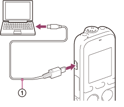

IC RecorderICD-PX333/PX333F
Connecting the IC recorder to your computer
To exchange files between the IC recorder and your computer, connect the IC recorder to your computer.

- Connect the (USB) connector of the IC recorder with the USB port of your running computer with the supplied USB connecting cable (
 ) inserted into the connectors securely until each plug stops to the end.
) inserted into the connectors securely until each plug stops to the end. - Make sure the IC recorder has been recognized properly.
- On the Windows screen; open “My Computer” or “Computer,” and make sure that “IC RECORDER” or “MEMORY CARD” has been recognized.
- On the Mac screen; make sure that an “IC RECORDER” or “MEMORY CARD” drive is displayed on the Finder.
The IC recorder is recognized by the computer as soon as the connection is made. While the IC recorder is connected to the computer, “Connecting” is displayed in the display window of the IC recorder.
Note
- If you connect more than two USB devices to your computer, normal operation will not be guaranteed.
- Use of this IC recorder with a USB hub or a USB connecting cable other than the supplied cable is not guaranteed.
- A malfunction may occur depending on the USB devices connected at the same time.
- Before connecting the IC recorder to your computer, check that the batteries are inserted in the IC recorder.
- It is recommended that you disconnect the IC recorder from the computer when you are not using the IC recorder connected to the computer.